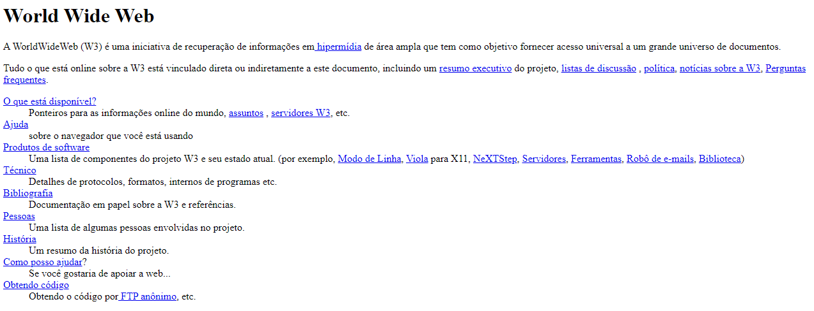
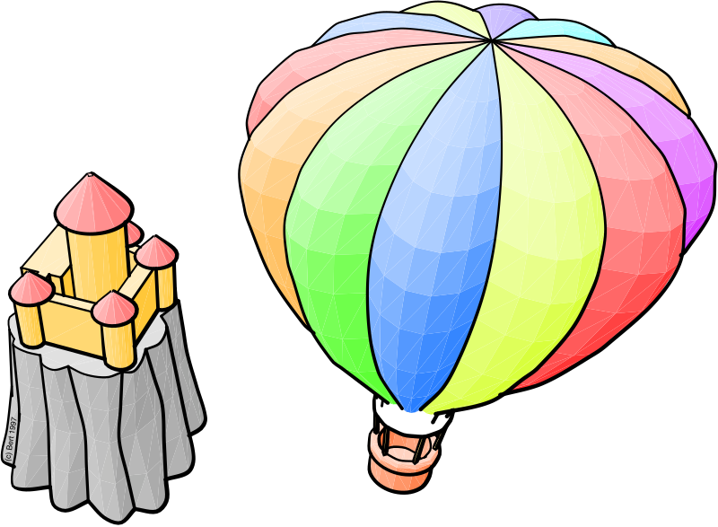
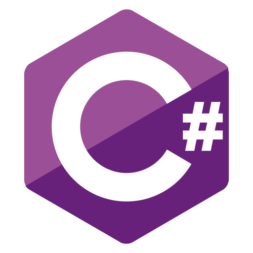
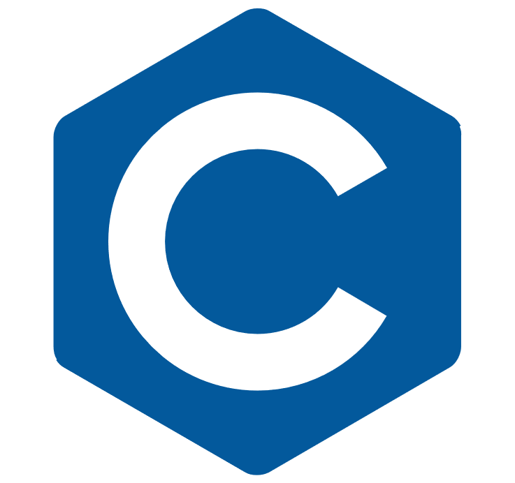
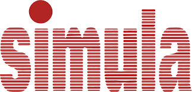
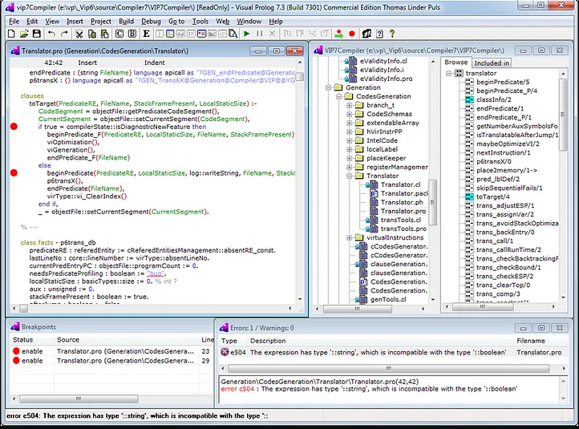

A História da Linguagem de Programação
As Linguagens de Programação são conjuntos de regras padronizadas por sintaxe e semântica, utilizadas para criar programas através de instruções. Elas foram criadas com o objetivo de facilitar a interação entre humanos e computadores, tornando-se uma ferramenta importante, produtiva e eficiente para os programadores.
Mas o que define uma linguagem de programação? Essa pergunta possui múltiplas respostas, sendo a mais básica o conjunto de regras que traduz e executa um programa escrito. Esses programas são chamados de Processadores de Linguagem. Um exemplo de processador é o Compilador, que recebe um arquivo, processa-o e retorna um arquivo executável. Existem diversos tipos de linguagens de programação, desde aquelas criadas para auxiliar os programadores até aquelas destinadas apenas a fins educacionais.
A história da linguagem de programação conta com diversos nomes que estabeleceram as bases do que consideramos código nos dias atuais. Um dos mais importantes é o da Primeira Linguagem de Programação, criada por Ada Lovelace em 1843. Ada utilizou papel para escrever o primeiro algoritmo para um computador, uma vez que não existiam máquinas naquela época. Desde então, muitas linguagens de programação foram desenvolvidas e utilizadas para diferentes propósitos.
Em resumo, aqui estão outros grandes nomes da história da computação: Grace Hopper, que criou o primeiro compilador em 1952; John McCarthy, criador da linguagem Lisp em 1958, amplamente utilizada na área de pesquisa em ciência da computação; e Kristen Nygaard e Ole-Johan Dahl, criadores da primeira linguagem a introduzir o conceito de classes, chamada Simula 67.

HTML
HTML (HyperText Markup Language), criado em 1991 pelo britânico cientista da computação, Tim Berners-Lee. É o bloco de construção mais básico da internet, ele define e estrutura o conteúdo do website. o "Hipertexto" refere-se aos links que concetam as páginas entre si, seja dentro de um único ou vários sites, ele usa marcação para anotar texto, imagem e outros tipos de conteudo para a exibição no website.

O codigo HTML foi criado para complementar o World Wide Web (WWW), e ser uma forma de interligar outros textos presentes na rede através de links, em 1992, o mesmo cientista, criou a World Wide Web, a rede nasceu na Organização Europeia para a investigação Nuclear, seu objetivo era facilitar o compartilhamento e atualização de informação entre os pesquisadores, que propôs a criação dos hipertextos para permitir que várias pessoas trabalhassem juntas acessando os mesmos documentos, essa foi a criação da conexão na internet atual.

JavaScript
JavaScript, criado em 1995 por Brendan Eich, é uma linguagem de programação de alto nível, o JavaScript foi criado com o objetivo de adicionar interatividade aos sites, interpretada e orientada a objetos. É amplamente utilizada para adicionar interatividade e dinamismo aos sites, permitindo que os desenvolvedores criem funcionalidades avançadas, como validação de formulários, animações, manipulação de elementos HTML, comunicação com servidores, entre outros.
Além disso, o JavaScript possui uma sintaxe flexível e recursos poderosos, como funções de primeira classe, closures e suporte a programação assíncrona com Promises e async/await. Esses recursos permitem que os desenvolvedores escrevam código conciso e eficiente, lidando com tarefas síncronas e assíncronas de forma eficaz.
Em resumo, o JavaScript desempenha um papel fundamental no desenvolvimento web moderno, permitindo a criação de sites e aplicações interativas, responsivas e dinâmicas. Sua versatilidade e popularidade o tornaram uma das linguagens mais utilizadas no desenvolvimento front-end e back-end.

CSS
O CSS (Cascading Style Sheets), criado em 1996 pelo World Wide Web Consortium (W3C), é uma linguagem de estilo utilizada para definir a apresentação e o design de documentos HTML. O CSS complementa essa funcionalidade ao adicionar estilos, layouts e efeitos visuais.
O principal motivo para a criação do CSS foi separar a camada de apresentação da camada de estrutura dos documentos web. Antes do CSS, o estilo das páginas web era definido diretamente no código HTML, o que tornava a manutenção e a atualização dos estilos uma tarefa complexa e trabalhosa.
O CSS oferece um conjunto de regras e propriedades que permitem aos desenvolvedores controlar o posicionamento, a cor, o tamanho, a fonte e outros atributos. Com o CSS, é possível criar layouts responsivos, ajustar o espaçamento entre os elementos, aplicar transições e animações, e personalizar completamente a aparência de um site.

Fortran
O Fortran (Formula Translation), criado em 1954 por uma equipe liderada por John Backus na IBM, é uma das linguagens de programação mais antigas ainda em uso. Foi projetada para fins científicos e de engenharia, sendo amplamente utilizada em cálculos numéricos e computação de alto desempenho.
O principal motivo para a criação do Fortran foi fornecer uma linguagem de programação de alto nível que pudesse ser usada para escrever programas científicos e de engenharia de forma eficiente.
O Fortran introduziu conceitos inovadores, como a capacidade de expressar fórmulas matemáticas diretamente no código, o que facilitou o trabalho dos cientistas e engenheiros. Além disso, o Fortran trouxe recursos avançados para cálculos numéricos, como tipos de dados especiais para representar números reais e complexos, funções matemáticas incorporadas e manipulação eficiente de matrizes e vetores.

Smalltalk
O Smalltalk é uma linguagem de programação orientada a objetos que foi criada por Alan Kay, Dan Ingalls e Adele Goldberg no Xerox Palo Alto Research Center (PARC) na década de 1970. Ela é conhecida por sua abordagem inovadora e influente no paradigma de programação orientada a objetos.
O principal motivo por trás da criação do Smalltalk foi fornecer uma linguagem de programação que permitisse a modelagem de sistemas complexos de forma intuitiva e flexível.
O Smalltalk introduziu o conceito de programação orientada a objetos, no qual os programas são estruturados em torno de objetos, que representam entidades do mundo real. Além disso, o Smalltalk também trouxe a ideia de ambiente de desenvolvimento integrado (IDE), no qual os programadores podem criar, testar e depurar seus programas em um ambiente interativo.

C#
C# é uma linguagem de programação moderna, orientada a objetos e fortemente tipada. Ela foi criada pela Microsoft e lançada em 2000 como parte da plataforma .NET. O objetivo principal por trás da criação do C# era oferecer uma linguagem que fosse fácil de usar, eficiente e adequada para o desenvolvimento de uma ampla variedade de aplicativos para Windows.
O C# foi desenvolvido levando em consideração as melhores práticas de outras linguagens, uma das principais motivações para a criação do C# foi fornecer uma linguagem que permitisse o desenvolvimento rápido de aplicativos para o ambiente Windows. Com o C#, os desenvolvedores podem criar aplicativos web, serviços, jogos e muito mais, todos integrados ao ecossistema Windows.

C
C é uma linguagem de programação de função geral, criada por Dennis Ritchie no início da década de 1970. É uma das linguagens mais antigas e influentes até hoje, sendo amplamente utilizada no desenvolvimento de sistemas operacionais, compiladores, aplicativos de baixo nível e muitos outros tipos de software.
O objetivo principal por trás da criação da linguagem C era oferecer uma linguagem de programação portátil e eficiente, que pudesse ser utilizada para desenvolver software em uma ampla variedade de plataformas e arquiteturas de computadores. Uma das principais características é seu suporte a ponteiros, que permite manipular diretamente a memória do sistema. Essa funcionalidade dá aos programadores um controle preciso sobre alocação de memória, acesso a recursos de hardware e implementação de estruturas de dados eficientes.

C++
C++ é uma linguagem de programação de propósito geral e de alto nível, criada como uma extensão da linguagem C. Foi desenvolvida por Bjarne Stroustrup e lançada pela primeira vez em 1983. ela combina recursos da linguagem C com recursos adicionais que permitem a programação orientada a objetos.
Uma das principais vantagens do C++ é sua eficiência e desempenho. Ele permite um controle mais preciso sobre a alocação de memória e o gerenciamento de recursos, o que o torna uma escolha popular para o desenvolvimento de aplicativos que exigem alta performance, ela tambem suporta programação orientada a objetos, o que significa que permite a criação de classes, objetos e herança. Esses recursos facilitam a organização e a estruturação do código, tornando-o mais modular e reutilizável.

PHP
PHP (PHP: Hypertext Preprocessor), é uma linguagem de programação para o desenvolvimento web. Foi criada por Rasmus Lerdorf no final da década de 1990 e tem como principal objetivo facilitar a criação de páginas dinâmicas e interativas na web.
A sigla PHP originalmente significava "Personal Home Page", Uma das principais características da linguagem é sua capacidade de se integrar facilmente ao HTML, permitindo a inclusão de trechos de código dentro de um documento HTML, essa linguagem de programação é interpretada no lado do servidor, ou seja, o código é processado no servidor antes que a página seja enviada para o navegador do usuário.

Phyton
Python é uma linguagem de programação interpretada, de alto nível e de propósito geral. Foi criada por Guido van Rossum e lançada pela primeira vez em 1991. Conhecida por sua simplicidade e facilidade de uso, o que a torna uma ótima opção para iniciantes em programação.
Uma das principais características do Python é sua sintaxe clara e legível, que torna o código fácil de ser lido e compreendido. É uma linguagem versátil, permitindo o desenvolvimento de uma ampla variedade de aplicativos, desde pequenos scripts até grandes sistemas distribuídos. Ela suporta múltiplos paradigmas de programação, incluindo programação orientada a objetos, programação imperativa e programação funcional.

Java
Java é uma linguagem de programação de propósito geral, orientada a objetos e desenvolvida pela Sun Microsystems na década de 1990. Ela foi projetada para ser uma linguagem portável, ou seja, capaz de ser executada em diferentes sistemas operacionais sem a necessidade de grandes modificações.
Uma das principais características do Java é sua capacidade de executar em uma máquina virtual, conhecida como JVM (Java Virtual Machine). Isso significa que os programas escritos em Java são compilados para um formato intermediário chamado bytecode.
É uma linguagem de programação versátil, portável e orientada a objetos, amplamente utilizada em uma variedade de domínios. Sua capacidade de executar em uma máquina virtual, sua sintaxe legível e sua ênfase em segurança e robustez a tornam uma escolha popular para o desenvolvimento de aplicativos de grande escala, sistemas corporativos e aplicativos móveis.

Kotlin
Kotlin é uma linguagem de programação moderna e de tipagem estática que roda na Java Virtual Machine (JVM) e também pode ser compilada para JavaScript ou para código nativo. Foi desenvolvida pela JetBrains em 2010.
Ela foi projetada para ser uma alternativa mais concisa e segura em relação ao Java. Ela oferece uma sintaxe mais limpa e expressiva, permitindo que os desenvolvedores escrevam código de forma mais concisa, sem perder a clareza e a legibilidade. Ela também se integra perfeitamente com o código Java existente, o que facilita a adoção gradual da linguagem em projetos já estabelecidos.
É uma linguagem de programação moderna, concisa e segura, que roda na JVM e pode ser compilada para JavaScript. Com sua sintaxe expressiva, recursos de programação funcional e integração com o ecossistema Java, Kotlin se tornou uma escolha popular para o desenvolvimento de aplicativos Android e para uma ampla gama de outros cenários de desenvolvimento.

Ruby
Ruby é uma linguagem de programação dinâmica, de alto nível e orientada a objetos, criada pelo programador japonês Yukihiro Matsumoto, no início da década de 1990. Ela foi projetada com foco na simplicidade, na produtividade do desenvolvedor e na legibilidade do código.
Uma das principais características é sua sintaxe elegante e expressiva, que se assemelha a uma linguagem natural. Isso torna o código Ruby fácil de ler e entender, favorecendo a colaboração entre os desenvolvedores e facilitando a manutenção do código ao longo do tempo.
Ela é uma linguagem de programação dinâmica, de alto nível e orientada a objetos, que se destaca por sua sintaxe elegante, legibilidade do código e ênfase na diversão do desenvolvimento. Sua comunidade ativa, bibliotecas abrangentes e filosofia de simplicidade tornam Ruby uma escolha popular entre os desenvolvedores para uma variedade de projetos e aplicações.

R
R é uma linguagem de programação e ambiente de desenvolvimento estatístico amplamente utilizado por estatísticos, cientistas de dados e pesquisadores. Foi criado por Ross Ihaka e Robert Gentleman na Universidade de Auckland, Nova Zelândia, no início dos anos 90.
Ela é uma linguagem interpretada, o que significa que os programas escritos em R são executados diretamente, linha por linha. Isso permite que os usuários interajam com os dados de forma interativa, experimentando diferentes análises, gráficos e modelos estatísticos em tempo real.
Uma das principais características é sua capacidade de lidar com análise estatística e visualização de dados. Ela fornece uma ampla variedade de funções estatísticas e pacotes que permitem aos usuários realizar tarefas complexas de análise de dados, modelagem estatística, criação de gráficos e muito mais.

Simula
Simula é uma linguagem de programação orientada a objetos que foi desenvolvida por Kristen Nygaard e Ole-Johan Dahl no final da década de 1960 no Instituto Norueguês de Tecnologia (NTH).
Ela é considerada a primeira linguagem a introduzir os conceitos fundamentais da programação orientada a objetos. A principal motivação por trás do desenvolvimento dela era a necessidade de modelar sistemas do mundo real e simular seu comportamento de forma precisa. Antes do Simula, as linguagens de programação existentes não tinham recursos adequados para lidar com problemas complexos de simulação.
É uma linguagem de programação pioneira na área de programação orientada a objetos, desenvolvida para lidar com problemas complexos de simulação. Seus conceitos, como classes, objetos, herança e polimorfismo, foram fundamentais para o desenvolvimento da programação orientada a objetos como a conhecemos hoje.

Prolog
Prolog (Programming in Logic), é uma linguagem de programação baseada em lógica formal, desenvolvida por Alain Colmerauer e Philippe Roussel na década de 1970. Ela se baseia no cálculo de predicados da lógica matemática e é amplamente utilizada em inteligência artificial, processamento de linguagem natural, sistemas especialistas e programação de lógica dedutiva.
Ela se diferencia das linguagens de programação convencionais, pois utiliza a programação lógica como paradigma principal. Em vez de instruir o computador a executar uma sequência de comandos, no Prolog, você define um conjunto de fatos e regras lógicas que descrevem um problema e permite que o sistema de Prolog inferira as respostas com base nessas regras.
O Prolog é amplamente utilizado em áreas como processamento de linguagem natural, sistemas especialistas, análise de dados, modelagem de problemas complexos e inteligência artificial. Sua abordagem lógica e declarativa oferece uma maneira única de resolver problemas complexos e lidar com raciocínio lógico.

Pascal
Pascal é uma linguagem de programação de alto nível desenvolvida pelo cientista da computação suíço Niklaus Wirth em 1970. Ela foi projetada com o objetivo de fornecer uma linguagem de programação clara, estruturada e eficiente, adequada para o ensino e o desenvolvimento de software de sistemas.
Uma das principais características é sua sintaxe simples e legível, que facilita a compreensão e a depuração do código. Foi projetado com foco na programação estruturada, incentivando a divisão de um programa em módulos, funções e procedimentos independentes e bem definidos.
Embora Pascal tenha sido substituída por linguagens mais modernas em muitos contextos, seu legado permanece presente em outras linguagens de programação.

Égua
Égua é uma linguagem de programação moderna e simples, totalmente brasileira. Ela foi criada por Lucas Pompeu e seus amigos da faculdade em abril de 2020. O código é totalmente em português.
Ela foi criada para descomplicar o aprendizado em programação para pessoas que não sabem inglês ou não têm familiaridade. Cada objeto é desenvolvido em JavaScript. Sua primeira versão foi lançada em 2019.
Em resumo, a Linguagem Égua é uma linguagem de sintaxe simples, derivada da língua brasileira, com o objetivo de quebrar as barreiras da linguagem para pessoas que desejam aprender a programar.
Atividade desenvolvida como extensão no projeto
PACEX/Mundo Tech do curso de análise e Desenvolvimento de Sistemas
Unipar - Cascavel